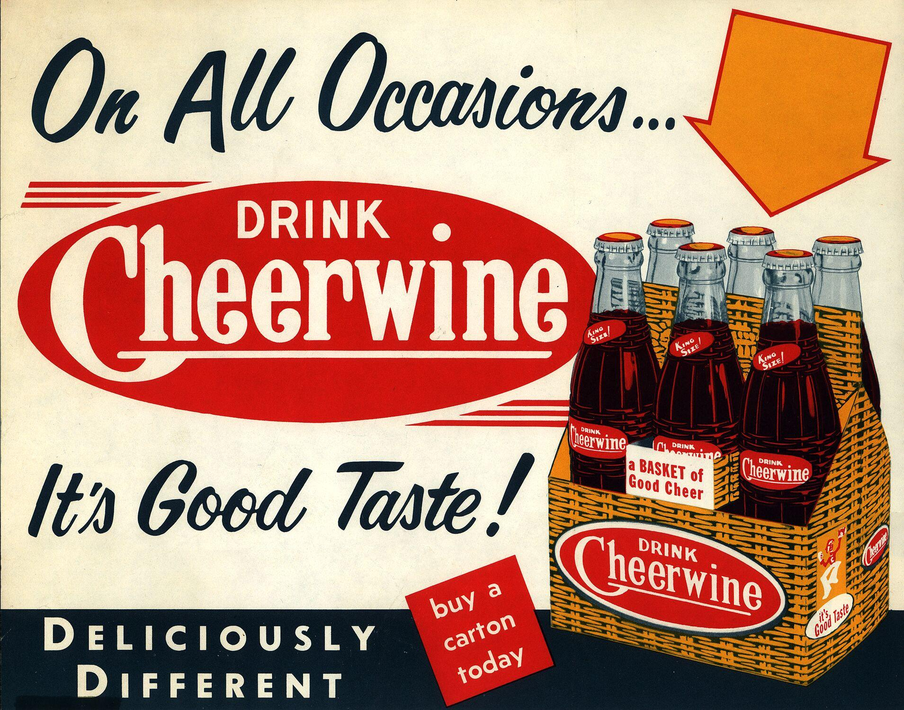
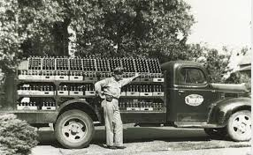
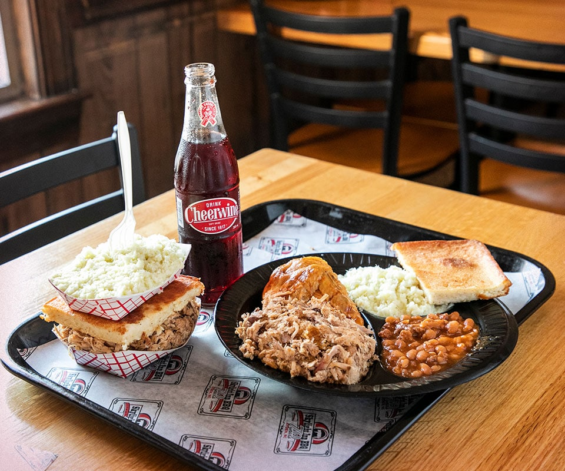
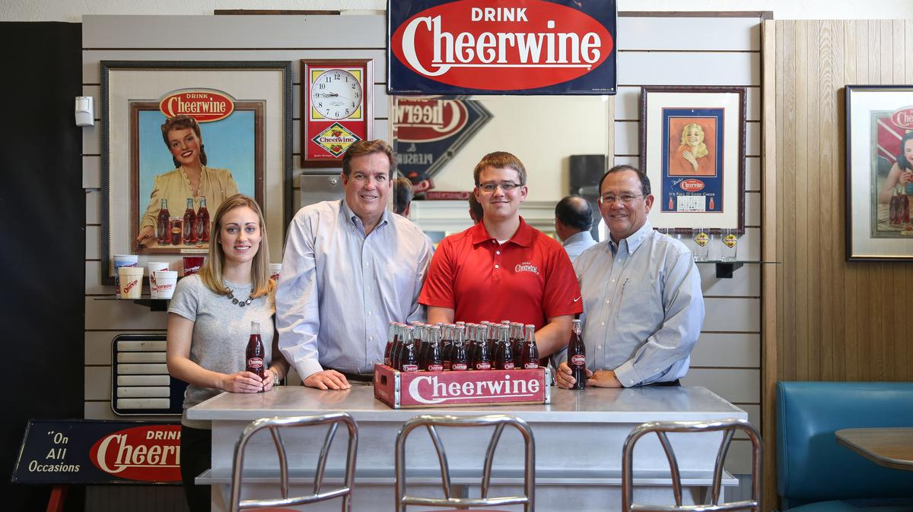
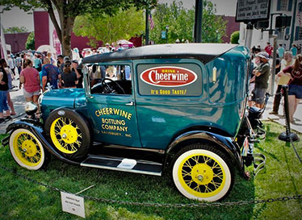

For over 100 years, Cheerwine has been attracting fans with its unique cherry flavor, but how much do you really know about the North Carolina-born soft drink? Read on to find out.
In the Beginning

Cheerwine was created in Salisbury, NC in 1917. The founder, named L.D. Peeler, was sold a wild cherry flavor from St. Louis, and after deciding on the name "Cheerwine," the soda was born. It became an instant hit.
The Home Front

L.D. Peeler was aiming to create a new soda during World War I at the height of a sugar shortage, so his recipe had to use less while still maintaining the sweetness his competition contained. The iconic cherry flavor achieved this goal, and gave Cheerwine its claim to fame as the first ever bottled cherry soda.
Southern Tradition

Aside from its founding location and loyal fanbase in the South, one of the elements that helped cement Cheerwine as a staple of the South was barbecue culture. The drink's sweet flavor is considered by Southerners to be one of the best pairings with NC-style barbecue since it complements the vinegar and ketchup flavors of the meat, and barbecue restaurants around the state have served the soda for as long as many people can remember. The combination is so iconic it even has its own name: a "Southern handshake."
A Cheery Future

Over the years, demand for Cheerwine has increased gradually to encompass more than just North Carolina. While it is currently still difficult to find the beverage outside of Southern states, that fact will soon change. As native North Carolinians move away from the state, they have brought knowledge of and demand for the drink with them, and social media is only expediting the process. Cheerwine is even available on Amazon now.
100 Years of Greatness

2017 marked Cheerwine's centennial and the start of the annual Cheerwine Festival in Salisbury, and the company shows no signs of slowing anytime soon. The Carolina Beverage Company, remaining faithful to the classic drink, only produces Cheerwine, though they have since released diet, zero sugar, and holiday versions, along with other Cheerwine-inspired recipes like an ice cream flavor and an annual Krispy Kreme Cheerwine donut. The drink is also used in several barbecue sauces and other desserts. It is safe to say Cheerwine will be around for many years to come.
{kind=link}
{kind=link}
{kind=link}
{kind=link}
{kind=link}